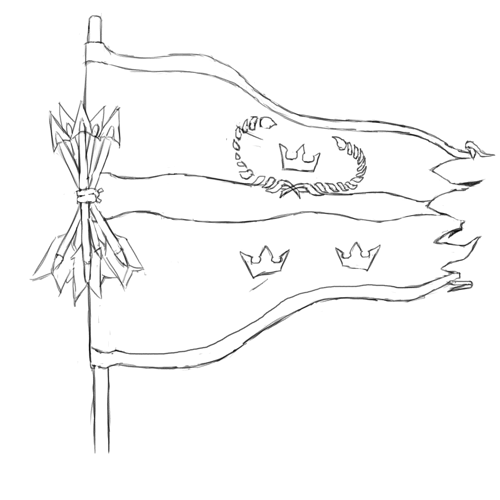

The Kingdoms of Men
The Kingdoms of Men are a human nation that lies to the northeast of the Dragonshire; it arose from the ashes of the Empire of Man more than a century after its collapsed.
A feudal society, composed of many (mostly-)Human kingdoms tied together by a complex web of custom, alliance and treaty.
Major Character: Kass Ahnaff, High King
Kass Ahnaff is the current High King. He has ties of business and noble bond throughout the Dragonshire, and trade with the Commonwealth has made him wealthy. He supports a closer alliance with the Commonwealth, even to the point of allowing non-Humans to purchase land and do business in the Kingdoms (he might say that it certainly doesn't seem to have hurt the Commonwealth much).
Unsurprisingly, the Commonwealth Council would much rather see Kass Ahnaff on the Kingdoms' throne than any of his nearest competitors, and are investing heavily in making sure that he stays there.
His throne is in Merchantmen City (below).
Major Character: Mela, Tenna King
Mela Tenna is the current king of the Kingdom of Tennec; his throne is in Hate's Hold (below). He is the most powerful Eastern King, and the de facto head of their movement.
He has openly declared his hatred of all non-Humans — including the Haffa, as well as every Human citizen of the Commonwealth, whom he views as traitors. (He utterly loathes Kass Ahnaff, who he views as the greatest race-traitor in the Kingdoms.) He has led a series of bloody purges of any remaining non-Humans in the Kingdom of Tenna; he promises similar purges in the entire Kingdoms of Men should he attain the Throne, to be followed by a war of annihilation on the Commonwealth.
He has recently become a devotee of the One who Chose Us.
If anyone is unambiguously evil, it's Mela Tenna.
Major City: Merchantmen City
Known as Annhallan in Royal and Merchantmen City in Commonwealth Standard, this city of 900,000 sits in the northwest of the Kingdoms, about 140 demarc [roughly 588 kilometers] from the border with the Dragonshire, sitting scarcely a demarc from the coast of the Glass Sea. Annhallan is the capital city of the Kingdom of Anaff; since Kass Anaff is the current High King, the city is currently also the center of government for the Kingdoms of Men.
As the name Merchantmen City implies, the Kingdom of Anaff has long prospered by trade, especially with the Commonwealth; traders from Heartland Province and the Dragonshire are common, and many of hte Commonwealth's languages are spoken in Merchantmen City.
Major City: Hate's Hold
Called Tenlan in Royal, Hate's Hold is the capital of the Kingdom of Tennec; it is a city of 800,000 in the southeast of the Kingdoms. It lies on a river, less than two demarc [8km] up-river from the the coast of the Glass Sea, and a mere 160 demarc [672km] from the open ocean.
With convenient river access to the Glass Sea, Tenlan is a wealthy trade town; their wealth and power are bolstered by a system of weirs and water-channels that water the surrounding territory, which they control and charge for access to. The Tenna are among the wealthiest (and most convicted) of the royal families of the East; as such, Tenlan is the unofficial capital of the Eastern Kings.
Tenlan is also the center of the worship of the One who Chose Us in the Eastern Kingdoms.
The city is called Hate's Hold for a reason; it is not a good place to be if you aren't Human.
Major City: The First Throne
Called Hanman in Royal (and Old Imperial), First Throne is one of the Three Cities that came together to found the Old Empire. Though it is still a large and prosperous city — situated on the large River Hanem, it has always been a center of trade — it is no longer a center of power within the Kingdoms. It has a population of 350,000.
The name First Throne is not figurative: the first and oldest-known cities where founded by Humans; though Hanman is not one of these oldest cities, it is believed to be the first city to hold a throne—to develop a regional government.
The city is in the Kingdom of Enha, although the Enhan Kings are relatively weak; the city is ruled by the Hanman Congress. So far, both the Enhan line and the Hanman Congress have been content to cooperate (for the most part), and enjoy the prosperity that comes from their prominent location and rich trade. The Enhan Kings are allies of the Annhallan and the Western Kings; the Hanman Congress are divided. A plurality are supporters of the Western Kings, but other blocs support the Certan cause, direct Commonwealth alliance and the Eastern Kings, in roughly that order of size.
Major City: Certa
Certa is a city of 650,000; located roughly in the middle of the Kingdoms of Men, it is the center of the Certan Movement, an anti-monarchist movement. Certa has been rebuilt on the site of an older (and smaller) city; the city was destroyed more than a century ago, and was claimed by the Certanis and rebuilt some 38 years later — 62 years ago.
The city is roughly circular; it is divided into pie-slice-shaped districts by prominent roads that run from the central administrative district to the outer wall. The city is built with a distinctive, modern architectural style; the buildings are built high, supported by free-standing buttresses, and are decorated with wide windows and prominent artwork.
The Certanis are described in more detail below.
History
They are Kingdoms in more than name alone; the society consists of a large number of local nobles, tied together in a complex web of allegiances. At present, there are 23 kings as such, more than 35 independent landed nobles (though some of their territories are no larger than a town), and more than a hundred noble families besides.
The allegiances that bind the Kingdom together are very fragile; they can shift, form and break all too quickly. Because of this, the Kingdoms' politics can be incredibly treacherous, as different power-blocks jostle for control.
Only sometimes can one King credibly claim rulership over all (or just enough) of the Kingdoms to claim the title of High King – and such a High King's rule is often tenuous, as they will never be without enemies, rivals and usurpers.
There have been three High Kingships in the Kingdoms' history. There first High Kingship lasted from CY 255 to CY 281; this short-lived dynasty collapsed 10 years after passing form its founder to its first heir, rent apart by an internal power struggle. The second High Kingship lasted from CY 361 to CY 435; these High Kings were substantially more warlike, and were in constant conflict with both the Dragonshire to their east and the Goblin Kings to their South. The second Kingship collapsed after a series of disastrous military adventures between CY 429-CY 433. The third High Kingship began in CY 695, and has lasted to the present day. This High Kingship had good relations with the Dragonshire, and now has good relations with the Commonwealth.
The Kingdoms can be roughly divided between their western and eastern halves. The western Kingdoms are relatively open; they have benefited heavily from trade with the Commonwealth, and have little interest in conflict with their wealthy and powerful neighbor. Unsurprisingly, the present High King hails from a city-state in the western Kingdoms.
The eastern Kingdoms are far more cruel; the Three Cities that built the Empire lie in the eastern portion, and to this day many of the residents there are quick to believe that humans should hold dominion over all other races (and that those whose ancestors built the Empire should hold dominion over all other humans).
The current High King is one Kass Ahnaff, who is the king of the city-kingdom of Annhallan (styled as Wise Westking and Merchantmen City in Common). Merchantmen City is in the Western Kingdoms;. Kass has enthusiastically pursued better relations with the Commonwealth, and has made only the barest pretense to disguise his willingness to cooperate with the Commonwealth to combat the nobles of the East who would see him deposed. Many easterners view Kass as the worst human being alive.
The Kingdoms' Economy
The Kingdoms are a relatively wealthy and sophisticated society, particularly in the West, where they have benefited heavily with trade with first the Dragonshire, and later the entire Commonwealth. During the peace that has prevailed between the Commonwealth and the Kingdoms since CY 695, merchants have crossed the borders between the Commonwealth and the Kingdoms, enriching communities on both sides; notably, rivers running east from the Worldspine give Commonwealth merchants easy access to the many ports on the Glass Sea, the large inland sea that separates the Kingdoms of Men from the Goblin Empire.
Knowledge also crosses the border, as scholars and innovations from the Dragonshire often cross into the Kingdoms, and vice versa.
Unfortunately, this thriving trade does put strain on the east-west divide within the Kingdoms; Commonwealth traders seldom venture into the Eastern Kingdoms, and so the wealth produced by trade is concentrated in the west.
Other Races
The Kingdoms of Men is a government of men, in their traditional territories; with few exceptions, they have not treated with the other races that may have dwelt within their borders, and instead have displaced them; any that remain are not recognized and citizens, but can only ever be subjects of the Kingdoms.
There is one notable exception; the Kingdom of Haffa in the northwest. Elves and humans are nearly unique in that they are able to interbreed, although these hybrids are usually sterile (and often suffer other ailments); the half-human, half-elven population of much of Haffa, including the noble line that rules the kingdom, are exceptions to this rule – they are not sterile, and do not commonly suffer any other ailment from their mixed blood. (It is rumored that magical intervention may have been required to achieve this; whether this is true – and if so, what that intervention was, or what price was likely paid – has been lost to history.)
Unsurprisingly, the Haffa are enemies-by-necessity of the Eastern Kingdoms, who view them as mongrels and half-breeds at best; they are also strong supporters of the current High King and his line. They usually have no special affinity for tribal Elves living within the Commonwealth's borders, and to the west of the Worldspine, much as Humans living in Heartland have no particular affinity for tribal Human cultures.
A particularly dark moment in the Kingdoms' history occurred some 200 years ago, when the Eastern Kings attempted to exterminate their indigenous Kobold populations; though a few small Kobold populations remain in the Western Kingdoms, the vast majority of them left in an exodus from the Kindgoms of Men. Some settled in the Dragonshire, owing partly to their ability to speak the Drakes' language; far larger number settled deep under the Worldspine; and many more still continued on to the Haven Isles. In the Commonwealth, Kobolds have prospered and become numerous; this is not the least of the reasons that the Commonwealth views the Eastern Kingdoms as their enemy.
The Military
Rapid improvements in the quality and availability of steel plate armor – in both the Kingdoms and the Dragonshire – have been the major driver of military tactics in the Kingdoms. The Kingdoms have sophisticated-enough metallurgy that they can produce large numbers of weapons and armors made of high-quality steel, but they cannot produce it on the scale that the Commonwealth can, and so steel plate armor in particular remains primarily the province of knights (who are often drawn from the ranks of the noble and the wealthy).
Knights are among the most iconic of the Kingdoms' combatants; horse-mounted human Knights in full plate are mobile, heavily-armored and difficult to strike, making them a devastating force on the battlefield. Many of the kingdoms have long traditions of horse-back riding and archery; because of this, besides mounted Knights, the Kingdoms can boast large numbers of skilled light cavalry and archers – especially masters of the devastating-though-difficult longbow. In recent years, however, the prominence of longbow archers has fallen away, as the Kingdoms now commonly arms its peasant infantry with easy-to-use and powerful crossbows.
In its early years, each noble and each kingdom was responsible for contributing to the Kingdoms' military from their own resources; though the Kingdoms where often capable of fielding a large and effective army, they could suffer from inconsistent standards of equipment, composition and discipline. One innovation achieved during the interregnum between the Second and Third High Kings was a standardization of the kinds of combatants that each kingdom was expected to furnish. Though the enforcement of these standards is still subject to the Kingdoms' internal politics, their military is nevertheless far more consistent and unified today than it has been in centuries past.
The Kingdoms typically view their Knights as their most elite and powerful combatants, and they are typically the centerpiece of their military strategy. After the Knights, their light cavalry and archers are their most prominent forces. They often field a small number of professional infantry, who they place at the front of their lines, and support with larger numbers of mercenaries, mustered peasants and even conscripted prisoners; unsurprisingly, the discipline, morale and effectiveness of the last two categories can vary widely.
Though not a fact that is often spoken aloud – especially in the Eastern Kingdoms – the Kingdoms of Men are entirely militarily overmatched by the Commonwealth. Though the Commonwealth cannot boast the large number of Knights that the Kindgoms can, the Commonwealth is richer, has better access to steel, is much larger, has a much larger professional military, and can draw on the much greater physical strength of Gnolls and Drakes.
The Kingdoms, however, are a match for their neighbor to the south, the Goblin Empire, which led the Goblins in years past to sail south from the Emerald Plane and seek riches (and weaker opponents) on the Ruby Plane. This influx of wealth (and new source of fighting experience for their infantry), however, has led to a significant improvement in the Goblin Empire's military; this in turn has not escaped the notice of the Kingdoms of Men.
The Kingdoms of Men and Other Nations
At present, the Kingdoms of Men are at peace with the Commonwealth, and are not at war with the Goblin Empire. The High King has fostered good relations with the people of the Commonwealth, and the people of the Western Kingdom have prospered from it. This state of affairs is precarious, however, as many within the Eastern Kingdoms would dearly love to seize the throne – and thereafter to reclaim long-lost territories from the Dragonshire, to lay the Commonwealth and the Goblin Empire low, and to restore humanity to preeminence in the land east of the Worldspine.
They could never achieve this on their own, however, even if they could command the undisputed loyalty of all the kings and nobles of the Kingdoms of Men; therefore, the nobles of the East are searching for allies.
The rulers of the West are not ignorant of this – the kings of the far east are seldom subtle in their contempt for non-humans – and so they are seeking allies, too. And so, the struggle for rule of the Kingdoms of Men has become something of a proxy war between all the great powers of the continent.
If the Easterners can seize control of the Kingdoms, and if they strike an alliance with the Goblin Empire and the Shaded Sea Peoples – even a temporary one – then the Commonwealth is doomed; if, however, the current high-king can solidify his control, then an alliance with the Commonwealth is a possibility – and should that happen, the Shaded Sea People and the Goblinoid Empire would in turn be hopelessly outmatched.
Fortunately for the Commonwealth and the Western Kingdoms, a nightmare alliance between the Shaded Sea People, the Goblins and the Eastern Kingdoms seems unlikely; the Human and Goblin nations have a long history of conflict, and the Shaded Sea People have no significant contact with either; what's more, the Eastern Kingdom's obvious contempt for non-humans would make such an alliance difficult to strike (and impossible to sustain).
The internal politics of the Kingdoms of Men are one of the major conflicts that drives the plot of Renaissance, and are a major source of plot hooks; the fate of the known world rests in the balance, and there's plenty of room for assassinations, blackmail, dirty tricks and secrets to make a difference!
Players can
- investigate assassinations,
- blackmail nobles into supporting an alliance with the Commonwealth,
- assassinate Eastern Kingdoms nobles themselves,
- discover ancient family secrets — secret shames, ancient contracts, deals with powerful spirits, family curses,
- discredit hostile noble lines,
- break up powerful alliances,
and on and on!
The Certan Movement
The Certan Movement is an anti-monarchist movement centered in the city of Certa. Though centered in the city of the same name, they have risen in power and prestige; they have claimed the territory around the city of Certa, and have begun to spread. Certa is the name of both the movement and its stronghold in Royal; in Common, they are often called King-Slayers or Gold-Bloods (the latter being an epithet).
The city of Certa was built on the site of a much older city, which was destroyed almost a century ago. The remains of that city where claimed by the nascent Certan movement, and its reconstruction began 62 years ago. Sitting at the center of the Kingdoms of Men, Certa is a crossroads; it has become a center of overland trade and travel in the Kingdoms, and has risen rapidly in wealth and prestige — though it does suffer somewhat from being several hundred demarc from the coast of the Glass Sea.
Besides the city of Certa itself, they also control the surrounding territory — and they are expanding. So far, they have advanced to the south (toward the coast) and west (into the territory of the Western Kings), displacing local nobles as they go.
The Certa are not a peaceful movement; not all of the nobles that they have displaced have survived. Though there has not yet been an open insurrection, in recent years, a number of nobles have died (or disappeared) under mysterious circumstances — and others have obviously been assassinated. Though the Certanis have not yet been proven responsible, they have also not been particularly subtle — particularly considering that much of their expansion has been by expanding into the territories of dead or disappeared nobles near their territory.
The Certanis are a destabilizing influence in the already-tumultuous politics of the Kingdoms of Men, which can make them a rich source of plot hooks.
- The Certanis may began an open insurrection; this might provide the Goblin Kingdoms with an opportunity for attack, pull the Commonwealth into a war to defend their Western allies, or — if the Certanis and the West wound each other too badly — place the Eastern Kings in command of the Empire.
- A noble in the West could die under mysterious circumstances, which various factions in the Commonwealth may wish to investigate.
- The Certans are a recent movement; the party may simply be dispatched to investigate them — to decide if they're a potential ally or a potential threat.
- The Certans might not be as guilty as everyone assumes. Maybe many of the assassinations in the West are actually the result of treachery by Eastern Kings, and they are simply framing the Certans.
Though the Certanis are anti-monarchist, they are not particularly egalitarian; wealthy merchants and land-holders have largely stepped into the place of displaced nobles. Though Certa is nominally a Republic, only those with "a vested interest in the prosperity of the people"—that is, the wealthy, people of business, and land-owners — can actually vote in elections for the Chamber of Law, or hold seats in it. (The Chamber of Law is the only house in the Republic that can actually make law; the Chamber of the People serves a purely advisory role.)
The Certanis consider themselves natural allies to the Commonwealth — after all, their movement was inspired by the Kingdoms' powerful, peaceful, and mercantile neighbor. Unfortunately, the Kings of the West have been the main victims of the wave of political assassinations that is largely credited to the Certanis; given that the Kings of the West are allies of the Commonwealth, this makes any potential alliance between the Certanis and the Commonwealth somewhat fraught. What is perhaps worse is that some believe that the Certanis may not contain their regicide to the Kingdoms of Men; the Dragonshire also has a hereditary nobility — even if they have largely surrendered power to representative governments.
Why have the Kings of the West been the Certani's main victims? Certainly one possibility is that they're weaker. Though the Kings of the West are often wealthier than those of the East, they are also often less militaristic and more mercantile — thus they're more vulnerable to insurrection.
Another possibility is that the Certanis are a cat's-paw; if so, who's agenda are they really serving?
It might be the Kings of the East; they may using the Certanis to weaken and slay the Kings of the West, in a way that the Commonwealth will not rapidly intervene to stop. It might be the Goblin Kings, for much the same reason — this may be more likely, given that the Certanis are expanding rapidly towards the coast of the Glass Sea. Even more sinister is that the Goblins may be doing this to curry favor with the Eastern Kings. It could also be the Leapers; they may have decided to undermine the Kingdoms with guile rather than overt subjugation. It might even be a Tempter — or a spirit like them — seeking power for themselves.
GMs have a fair amount of leeway in how they depict Certa.
They might be a cynical movement no better than the kings they're replacing — an effectively hereditary ruling class replacing a directly hereditary one. Or they might be a major positive step for the Empire, despite their flaws — a sincere republican movement that heralds the breaking up of royal power.
Pick a Certa that fits the game you want to run!
The Haffa
The Kingdom of Haffa lies in the extreme northwest of the Kingdoms of Men; it shares a border with the Commonwealth. Its current capital is called Ehnef in Royal, although it is sometimes referred to as nal'Haffa (literally "Haffa Capital"); it's called Grey-Blood's Weir in Common, named for a spill-over dam on a river immediately to the east that feeds the water-channels that supply the city with water.
The Haffa are remarkable because they are one of the only large populations of half-breeds in the known world. Elves and Humans are almost unique in that they can (sometimes) produce offspring; these offspring frequently benefit from a kind of hybrid vigor (they are often taller, heavier and stronger than either elves or humans) but they can also suffer from strange, sometimes terrible diseases (ranging from the relatively benign, like bleeding easily or having strange allergies, to the debilitating and deadly, such as irregular growths, tumors or major birth defects). They are also almost always sterile.
The Haffa are one of only two stable, healthy and fertile populations of Elf-Human hybrids (the other being the Shifters). The Haffa maintain their health through selective breeding, special medicines, and magical intervention — the exact nature of which is not widely known outside of the Haffa royal line. (Perhaps unsurprisingly, the Haffan court heavily patronizes physicians, and their healers are renowned throughout much of the world — they are certainly among the best in the Kingdoms.)
The (secret) magical intervention that the Haffa use to ensure their health is an obvious plot hook. What is it? Was it a deal struck with a powerful spirit centuries ago, like the one that created the Drakes? What spirit was it struck with, and what cost was demanded? Or is it on-going, some magical process that requires constant tending — and which could spell the downfall of the Haffa if it is ever disrupted, which their enemies may seek to do.
The Haffans' politics are determined for them by their blood and their location; they have long been allies of the Kingdom of Ahnaff and the Commonwealth, with whom they share borders, and they are also major supporters of the current High King, Kass Ahnaff, who has been their shelter against the predations of the Eastern Kings. Conversely, they are despised by the Eastern Kings, who loathe them for their non-human blood; while open conflict between Kingdoms has been rare since the Third High Kingship was acclaimed in CY 695, the Eastern Kings have missed no opportunity to wound the Haffa.
Most recently, between CY 789 and CY 797, the Eastern Kingdoms deployed all their wealth and power to target Lords on the eastern border of the Haffa; after their finances crumbled, the Easterners purchased the Haffans' lands and holdings. What followed was a time of brutal abuse, as the peasantry that lived in those holds where starved and brutally exploited by their new, distant Eastern Lords; this time came to be known as the Easterner's Famine. As their circumstances became dire, the Haffan peasantry began to revolt; between CY 811 and 814, the Eastern Kings attempted to muster an army to suppress the revolts, but Ayl Ahnaff, Kass Ahnaff's granfather and the High King at the time, refused to raise the Kingdom's army or allow the Easterners to quarter in his territory. This made it impossible for the Eastern Lords to maintain control, and resulted in their selling their holdings to both the Haffan king and Ayl — the latter out of spite, to keep the Haffan's land out of their hands for as long as possible. The incident secured the Haffa's loyalty to the Ahnaff line for generations — as well as their deep hatred of the Eastern Kings.
Wolf-in-Wool's Flock
Operating under no singular title other than the common name of its leader, Wolf-in-Wool's network is an information-sharing organization based primarily in the Eastern Kingdosms of the Kingdoms of Men and the Haffa Kingdom. They are a largely-unknown and extra-legal group that gathers up secrets, links them together, and sells them on to the highest bidder. Tendrils of their network exist as far west as the eastern fringes of the dragonshire, and as far south as the shores of the Goblin Empire.
Within the Kingdoms, if a secret is held, it is almost guaranteed that someone within the Flock knows it. Rumors abound of the state of the network and it's operatives, up to and including the implication that Wolf-in-Wool herself is somehow a spirit of secrets and conspiracy.
The History of the Wolf's Flock
The network itself came into being in part as a result of the same campaign of starvation that cemented the Haffan King's hatred of the Eastern Kings. Betweem CY 803 and 806, in the midst of the Easterner's Famine, an outbreak of fever and a crop failure in the neighboring kingdoms lead to a sharp increase in poverty, hunger, and homelessness in the broader northwest of the Kingdoms of Men; the fever was especially lethal for adults, and left many children orphaned. A woman claiming to be related to a noble family with holdings in the border-lands of both Haffa and Ahnaff, began to feed and care for these children, in exchange for stories and rumors from the streets, or trinkets and baubles stolen from merchants. Her intentions where not pure, of course, as she used the children's knowledge for her own gain: sometimes, she sold their secrets and stories for gain, while other times she exploited them to pursue her own ends.
Evidently, her "flock" proved profitable, and she maintained her network after the fever died down. There being no shortage of poverty and want in the world – especially in the Eastern Kingdoms, where rulers are often brutal station and privilege are all but carved in stone – she did not want for recruits. As the Wolf-in-Wool (as she came to be known among the Kingdom's criminal element) established her empire of secrets and rumour, she retreated from public life. Over the years, the Wolf was able to spread her network throughout the Haffan border-regions, the other Northwest Kingdoms, and into the East – although how exactly the Wolf-in-Wool accomplished this is a secret known only to herself and the Grandmothers (her lieutenants).
As the children matured into con artists, street performers, beggars, and thieves, the capabilites of the Flock increased, quickly outpacing the abilities of the Kingdom's spies, seargents, and law-men to corrale it. Already accustomed to a hard life on the streets, the agents of the Flock knew well the best ways to disappear from view, fading into anonymity and slipping from town to town unremarked.
They have come to have an almost mythical status in the Kingdoms today: any time an unknown heir rises to a throne, a bastard child is born without protest or scandal, the whispers of revolt suddenly go silent, or the activities of the High Road are laid bare, it is only due to gold crossing the palms of the Wolf in Wool.
With the harsh conditions under Kingdoms feudalism, there is a constant stream of new recruits, both orphaned and runaway.
Managing the Flock
There is very little structure to the Flock. Every city has a single individual responsible for coordinating local activity, called "Grandmother" by the children who sell her secrets; in turn, the Grandmothers (presumably) answer to the Wolf-in-Wool. Of course, Grandmothers are often unassuming and private individuals – and they are always female.
There are also a small number of specialist "faces" within the Flock, adult males who function as intermediaries and dealmakers, exchanging secrets selected by the Grandmothers for prices agreed upon. (If captured, they are notoriously difficult to interrogate; they have a talent for deceipt and misdirection the envy of any barrister or university debater.)
Beyond the Grandmothers and Faces, the majority of the Flock's agents are children. Agents of the Flock are roughly ranked according to their age, as more mature and elder agents have a wider spread of activity and a better understanding of what secrets have value.
While the Flock does not have a training regimen as such, members are taught to play various word and memory games, and are encouraged to challenge each-other to various kinds of verbal sparring; this is done to nurture a sharp, quick, and probing wit, to train the children to work secrets out of others while preserving their own, and to ensure that sharp memories allow secrets to be carried to Grandmothers (and ultimately to the Wolf) without ever being written down.
Other than the Grandmothers and Faces, agents are free to act as they see fit, and to come and go as they please. (This is espeically practical, of course, as most of the agents are children, and most serve only short tenures.) Unlike other gangs – if the Flock may be so called – members are not beholden to the group; should they find gainful employment elsewhere, or should their travels take them beyond its influence, they are permitted to depart freely. They are also equally free to return; even a lapsed member will be welcomed back into the fold, should they bring a juicy secret for the Flock.
Relationships
The Flock has no particular friends or enemies: they will sell any secret to anyone, and so provide advantage to no one. Most find them to be useful and dangerous, in roughly equal measure.
There are two organizations that are rumored to have regular dealings with the Flock: the Far Watch and the High Road.
For the Far Watch, the Flock is a dangerous tool, best used sparingly and handled with care. Wolf-in-Wool's can prove too valuable a source of knowledge and intelligence to ignore; however, they are also perfectly willing to deal in the Far Watch's secrets, exposing the Watch's more cloak-and-dagger operations to their targets, potentially with dire consequences.
The High Road work closely with the more liberal, western fringes of the Flock, especially those in the kingdoms of Haffa and Ahnaff. Even though the large Flock contingent in the East means that news of the High Road's activities will doubtless travel through their network into the hands of Eastern Kings, the Flock's ability to provide intelligence about slave-hunters operating outside of the Eastern Kingdoms has proved to be invaluable.
As loose and diffuse as the Flock is, they do have their borders, areas where their influence ends and another organisation begins. They are mainly confined to the Kingdoms of Men, primarily in the northwest and east. Notably, they seem to have some kind of ongoing fued with the Certan movement, and have few tendrils in their territory; if there is a Grandmother in Certa, she keeps an even lower profile than most.
The way they allow their members to come and go as they see fit, also means that occasionally children who came up in the Flock will find themselves in other organisations. Former members of the Flock can bring impressive and valuable skills to other organizations – although this does need to be balanced against the risk that they will, if entrusted with a valuable secret, remember the kindly older woman that they used to call grandmother.
The Wolf-in-Wool's Flock provides a path for a street-urchin, orphan, or runaway to acquire skills and connections that can be invaluable during a campaign – although their origins in the kingdoms of Men does mean that members are most likely human. A childhood spent in the Wolf's Flock can be a compelling start for Investigators, Analysts, Socialites, and Infiltrators; because of their diverse backgrounds and paths, they can also dabble in nearly any other skill or trade. It will also allow a member access to allies valuable information, powerful connections and diverse skills.
Consider joining the Wolf's Flock if you:
- Want to play a character from a humble (or desperate) background.
- Want to play a character who slips under notice, and fades into the crowd.
- Want to play a character who deals in secrets and subterfuge.
- Want to work with spies and secret-brokers as partenrs.
- Want to play against type, possibly rising above your desperate and mysterious past.
Wolf-in-Wool's secret army is a foe that is as formless as mist. They swirl and curl around observation to obscure their movements and activity. When an agent is captured, their interrogation will produce so many half-truths and lies that the honest confession will be lost in the noise – if the agent is not not dismissed outright as a simple child or harmless old woman.
The main effect they can have on a campaign – for good or ill – is disclosing information that someone wishes to keep secret. They might sell the party a secret that they can use to blackmail an Eastern King, or provide the location of a target who has gone to ground somewhere on the coast of the Glass Sea. On the other hand, though, they might also sell the party out: they might reveal a Far Watch operation, or sell information about a High Road cell to an Eastern King.
The Secret Army might be most interesting as an impartial wildcard. Perhaps an obstacle, perhaps a boon, but certainly not to be ignored.
Note that a characte does not need to be a member of the Wolf's Flock to deal with them; they will sell secrets to anyone. Any character with a criminal background – certainly one with Profession: Criminal or something similar – would likely be able to go about setting up an audience with a local Face. Of course, they will need to be very careful when interacting with that Face; like any member of the Wolf's Flock, they are expert in verbal sparring, and will waste no opportunity to extract information.
The Wolf's Flock can be effective as the focal point of a campaign: as an end goal, reaching a deal with a Face; as a timed obstacle that one must outrace; as the subject of an investigation themselves; or as an outside force sent to pry into the party's secrets.
Wolf's Flock Adventure: He was never my favourite Grandson
A note appears in the party's bags, likely place by the slim fingers of a pickpocket: a grandmother in the western reaches of the Kingdoms asks for assistance. She claims that one of her Faces has been involved in a deal that has turned bad.
-It is rare for Grandmothers to make themselves known, so why would this one break from tradition? -What deal has taken place, and is it the deal she thinks it was? -What information is so valuable that the buyer was willing to betray the Flock, and risk having all of their own secrets exposed?
Wolf's Flock Adventure: They Mustn't Know
The party has come into posession of some kind of information that Wolf-In-Wool herself wants to be repressed. It might be information that would reshape the politics of the world, or it might be as simple as the name of an assassin from years past. But, dramatic or trivial, this brings the party to her attention, and they find themselves the target of a campaign of misinformation and hired blades.
-What information has the party come into contact with? -Is it even something the party is aware they know? -What do they do with the leverage this gives them? -What secrets can the Wolf-in-Wool bring to bear? -What kinds of lies can she cover them with? -Does she use her influence and wealth to hire the skills of assassins or cut-throats? -How do they deal with being hunted?